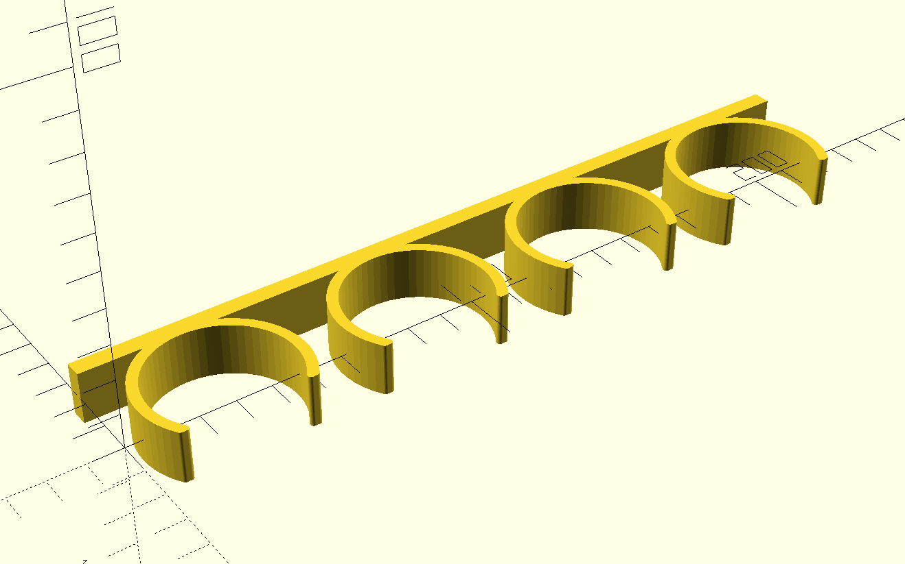
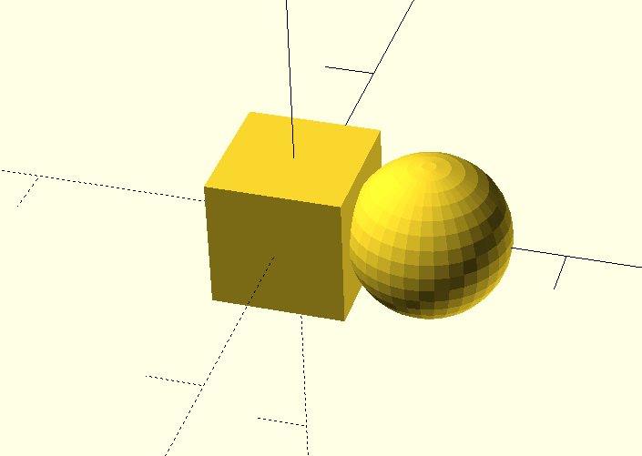
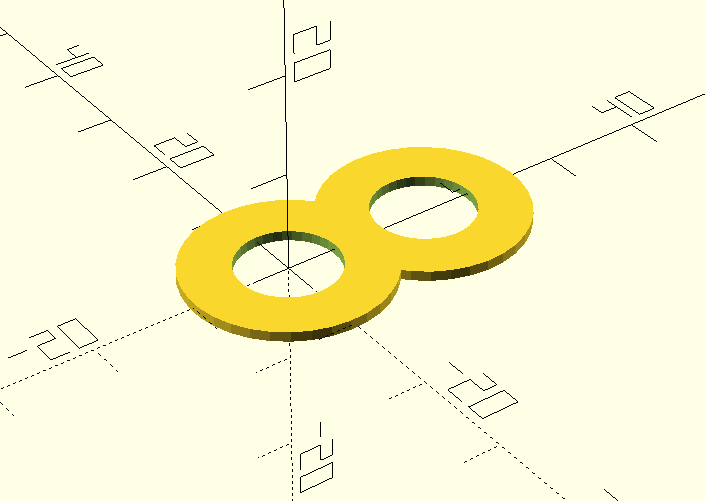
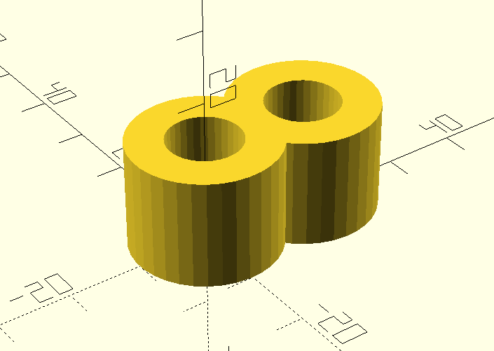
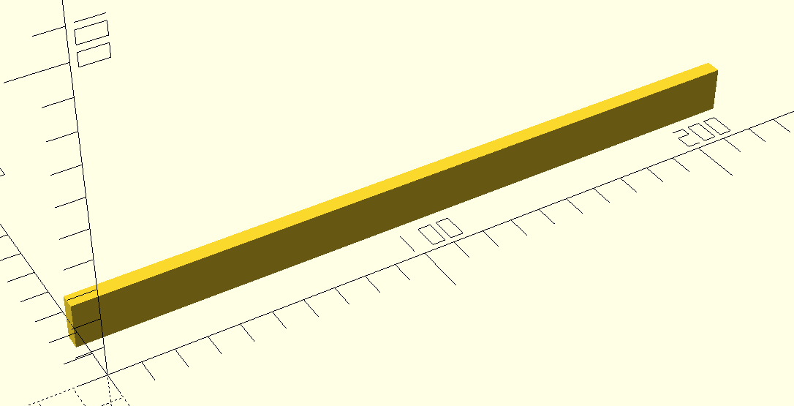
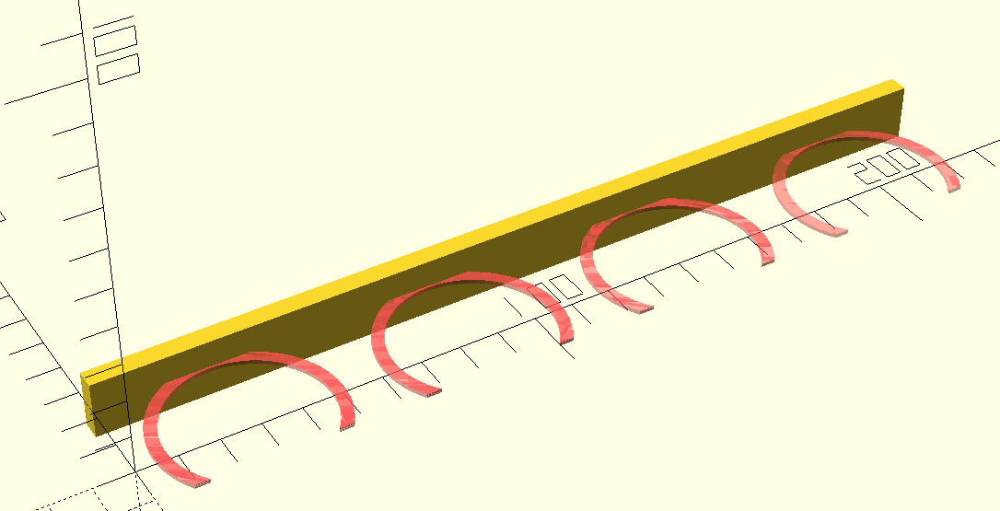
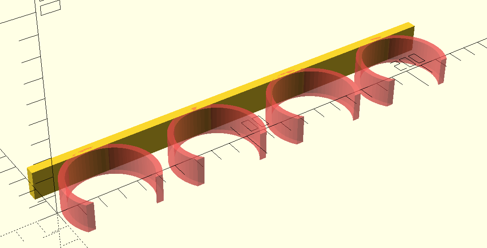
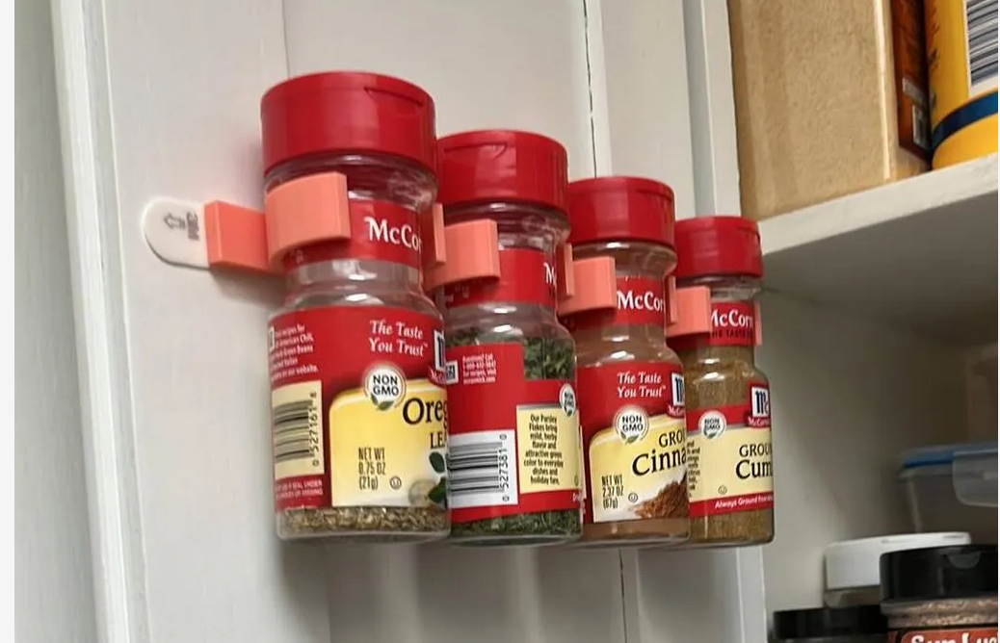

A few months ago I got tired of commuting to the local hacker space so I bought a cheap 3D printer to use at home. Like any good 3D printing neophyte, I printed quite a few precooked models before getting the itch to design some of my own.
The biggest hurdle ended up being that I couldn’t find good modeling software o run on Linux. I tried out FreeCAD as well as Blender but found them hard to get started with. Eventually I stumbled upon OpenSCAD which I ended up absolutely loving. So hopefully this is the first of at least a few posts where I dive into some of the things I’ve learned.
There’s obviously a lot of useful things you can make with a 3D printer. For my first project, I decided on a spice holder for two reasons:
Here’s the final design for reference:

I’m not really an expert at 3D modeling so I won’t say too much about the theory. But based on my limited research, I found OpenSCAD’s marriage between declarative scripting and constructive solid geometry (CSG) to be a wonderfully elegant combination.
The premise behind CSG is that there are a limited set of 2D and 3D primitives such as squares, circles, spheres, cylinders, cubes, etc. which can be combined with with boolean operators to yield complex geometries. For example, with the following code, you can take the union of a cube and a sphere to yield a cube-sphere fusion:
union() {
cube([5, 5, 5], center=true);
translate([5, 0, 0])
sphere(r=3);
}
Boolean expressions are not limited to single combinations – they can be nested arbitrarily. Consider this following example:
module ring() {
difference() {
circle(r=10);
circle(r=5);
}
}
linear_extrude(15) {
union() {
translate([15, 0, 0]) ring();
ring();
}
} 
The basic idea is we first create two rings, one next to the other. We then take the two rings and join them with a union. Finally, take the union and extrude along Z axis to create the final binocular shape.
The final other technique we use is a module. A module,
take in the context of C/C++ like languages, is more or less a macro. We
don’t use any parameters in the macro here, but we could have.
Knowing these basics, we move onto the design of the spice rack.
To start, we create the backboard:
translate([(225/2), 25, 0])
cube([225, 5, 15], center=true);
We translate the backboard a bit so that it’s length is easier to eyeball on the X axis and so it’s arms are more easily positioned on the Y axis. Note that OpenSCAD is unitless but my slicer (Cura) interprets the units as millimeters.
Next we create the arms:
inner_radius = 20;
outer_radius = inner_radius + 3;
module arm() {
difference() {
intersection() {
circle(outer_radius);
translate([0, 7.8, 0])
square([500, 41], center=true);
}
circle(inner_radius);
}
}
for (i=[0:3]) {
translate([i*56.5 + 28, 2, 0])
#arm();
}
The arms follow a similar design to the examples above. We make each
arm by intersecting two circles and slicing off the end so the spices
can fit. And instead of making one, we make four by using a
for loop.
One practical tidbit that we make use of is prefixing each arm with
# to give it a different render color. This is useful for
quickly eyeballing changes to your model. In this case, we’ll be using
it to illustrate the changes from the previous code snippet.
Once we have the 2D arms, all that’s left is to extrude them to the appropriate height:
module arm() {
#linear_extrude(15, center=true) {
// Previous contents of `arm()`
}
}
At this point we have a functional model. In fact, this is what I have printed and installed in my cabinets. However, there’s one small thing left for improvement: the tips of the arms. The tips are slightly sharp and could use some rounding out. To achieve this, we’ll use a Minkowski Sum.
Minkowski sums are relatively hard to explain with text but surprisingly easy to understand with a visualization. In the linked animation, the basic idea is that the sum of two nodes involves running the child node around the edges of the parent node and adding the shape that the motion creates to the parent node. In our use case, we’ll subtract an additional unit off the outer arm circle and replace the missing volume with the Minkowski sum of a sphere of the same dimension.
In code, this looks like:
minkowski_radius = 1;
module arm() {
linear_extrude(15, center=true) {
minkowski() {
difference() {
intersection() {
circle(outer_radius-minkowski_radius);
translate([0, 7.8, 0])
square([500, 41-minkowski_radius], center=true);
}
circle(inner_radius+minkowski_radius);
}
circle(minkowski_radius);
}
}
}With this we arrive at the model displayed in the beginning of this post, something that looks a little like:

Obviously this is not a complicated geometry. In fact, a mechanical engineer friend of mine was timed creating a similar model using professional tooling and it took about 90 seconds for him. Despite that, I still think this was a really enjoyable process. I particularly love how the entire language fits on a small cheat sheet – something unimaginable for industrial grade tools. As they say, a minute to learn but a lifetime to master. That more or less captures why I think OpenSCAD is such an elegant tool.